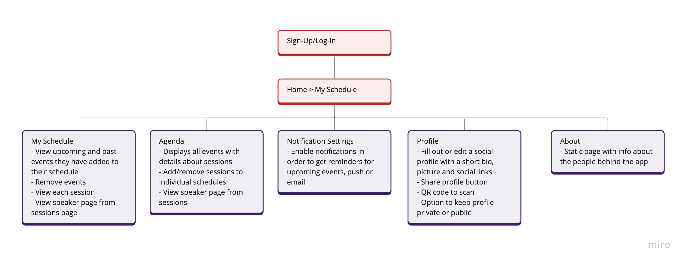
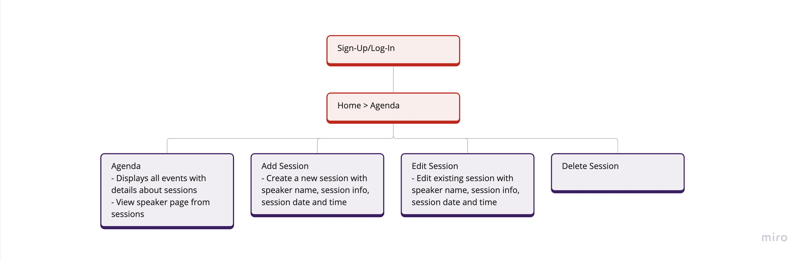

Rails World
👩🏻💻 My Role: UX and UI Designer, part of a team of
developers,
branding specialists, accessibility expert and
project manager
🕚 Project Duration: 6 months
⚙️Tools used: Figma, Miro
Project Context
I worked with the Rails Foundation to help design a conference website and app for their first ever Rails World conference in Amsterdam in October of 2023. Rails or Ruby on Rails is a framework of the Ruby coding language and is used in web development.
Rails World Website
Problem Statement
This was the first time the Rails community was having an event and we needed to make an engaging and informative resource that created excitement around the event, helped to create a brand around Rails World, boosted ticket sales, and overall attendee satisfaction.
Introduces conference attendees to the event
Facilitates ticket sales
Showcases an exciting panel of speakers
Provides comprehensive location details
Expresses gratitude to sponsors
Offers a clear and accessible FAQ section
Project to build the site serves as a helping hand to new developers and designers who are trying to break into the tech industry
Research and Analysis
I started by doing some benchmarking and looked at other conference
sites in the tech space to see what functionality they were offering
to users. I analyzed interactions, UI elements, typography and
language of the sites. They all had some features in common that also
aligned with what we were trying to tackle:
Clear schedule of speaker sessions that allowed users to view events per day or happening simultaneously
A page dedicated to the logistics of the event
Descriptions of the event/Intro to the organization
Sponsors section
Fonts used are mostly bold and large, colours are contrasting and the tone is usually casual/friendly
A nice feature was the ability to add sessions to your private calendar and post conference access to recordings of sessions
The Solution
As a group we went through each of our problem statements and discussed how each feature from the benchmark analysis could solve our own problems. I came up with a simple site map to visualize the bones of our site and use it as a starting point for discussion about the functionality and later the design of each feature.
Design
Once we had a well-defined idea of what we were building, it was time
for the fun part - designing the interactions and interface. To design
the site, I got some guidelines from the branding consultant who the
Rails Foundation was working with regarding the colour pallet, fonts
and some specific design aspects to stay on brand!
Beginning with a wireframe I started to shape the initial
visualization of our website's appearance and functionality. During
the design phase, I incorporated our solutions, addressing the
objectives outlined in our problem statement:
Two ticket buttons emphasized also to grab attention and lead the user
Scrollable carousel of speakers cards with easy access to full line-up
Top-left aligned logo (redirects to homepage) and top-right navigation bar, easy for user to scan
Speaker page containing full line up as a grid of cards, same as the ones from carousel
Answers to FAQ's that expand on click for a de-cluttered interface
Rails World App
Problem Statement
While at the event, conference attendees often have trouble figuring
out who's speaking, what they'll be talking about, and when it's all
happening. The option to plan their own schedule ahead of time, get a
heads-up before the talks start, and network with other attendees adds
a lot to the physical experience of attending a conference.
Publishes an up-to-date schedule of sessions
Allows users to easily add or remove sessions to their own personal schedule
Gives info about the sessions, speakers, locations of events
Reminds attendees of upcoming sessions
Gives the opportunity to network by sharing a personal profile by scanning QR code
Info page about the team behind the app
Research and Analysis
There are not a lot of conference apps out there to benchmark, in most cases even if they exist they are not available post conference. I checked out various event apps and the likes of Google calendar and summed up some common features that would address the problems we were trying to solve with our app:
Events can be added or removed from the agenda very easily on the agenda page and personal schedule
Simple onboarding of no more than two screens to create a user profile
Personal schedules show upcoming and past events
QR code sharing: display your code or save as photo, scan someone else's qr code, share qr code via email or whatsapp
QR code displayed as a pop-up
Notification settings are usually contained in a menu somewhere or in the bottom navigation
Burger menu with more options on right-top corner, bottom navigation
Speaker pages (in our case) contain info about speaker and their session information
The Solution
The app design was more complex with more interactions and required a more in-depth ideation process. We began by creating a similar map with all of the features the app should have and what each one needed to do.
We also needed to build an admin interface for event organizers to be able to manage sessions.
Design
I started the design process for the app by sketching my screens on paper and then putting together a wireframe which I later turned into the prototype below. Throughout the design phase, my focus was on integrating the following user-centered solutions we came up with and aligning them with our problem statement objectives:
Use of icons to aid the user along their journey throughout the entire app
Clear colour hierarchy for CTA buttons
Ability to keep the profile private
Easy access to Agenda if My Schedule is empty (first log-in)
Agenda lay-out per day with events in consecutive order, ability to switch from upcoming to past
Ability to easily add and remove sessions from both agenda and personal schedule
Burger menu over bottom navigation to allow more space for content
Option to enable notifications inside of the burger menu, ability to dismiss all and deep linking from notification to the session page
Testing
To test the app, we asked some of the attendees to help with perfecting the experience through a demo version before it was released. We received some very valuable feedback and were able to make updates and re-test with the users. Some of the design-related feedback that I took onboard and we were able to implement into the final solution:
Users preferred for cards to have same design with speaker images on Agenda and My Schedule
Add/Remove button in My Schedule was inside of the event page, so user had to tap on the event first if they wanted to remove it, I added it to the cards on the initial My Schedule screen
Conclusion
Reflecting on this project, I particularly enjoyed the app testing
step, being a small team it was possible to implement changes very
fast and present updated versions to test users almost live. This was
such a valuable step in the process and really helped us to build a
great user-centered product that I hope the Ruby Foundation will
re-use for future conferences.
I do recognize even more areas
for potential enhancement, particularly in the agenda layout design. I
put together alternative agenda lay-outs, where events that are
running simultaneously at different locations are displayed in one
view. This way the user has better visibility and can compare and
choose what they want to attend.


Finally, I really enjoyed working on this project and will carry many valuable lessons into my future work. The cherry on top was getting to attend the conference, meeting the wider Ruby community and seeing them all interact with software that I helped to build! 🎉